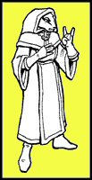

Tuesday, August the 3rd, 2004
back to: title, date or indexes
Dear Hooting Yard : I am deeply worried about Little Severin, the Mystic Badger that the denizens of Hooting Yard have taken under their wing (24 June). As soon as he was promoted to the post of making regular predictions, he seems to have disappeared. I don't want to appear suspicious, but you do have a habit of losing people—look at poor Mrs. Gubbins, who was forced into Tundism! I would feel very sad indeed if Little Severin has suffered a similar fate. Please can you let us know that he is all right, and what he thinks will happen to him? Yours concernedly, Poppy Nisbet
Hmm. I must admit I had been hoping to draw a veil over this one. However, Ms Nisbet deserves a reply, and it may be that she has raised a question which other readers have puzzled over. First of all, though, I must object to the accusation that Mrs Gubbins was “forced” into Tundism. This is just not the case. The Tundists offered the old crone sanctuary when she was on the run from the cops. She accepted. She is content. Indeed she is drooling with happiness. The first tract from the Tundist Owl Library under her editorship will be issued soon.
Now, as to Little Severin, I am afraid to say that we were misled by that epithet “the Mystic Badger”. It rapidly became apparent that Little Severin's scrubbling round in the undergrowth, rustling twigs, gobbling up grubs, and doing that thing with his paws, all of it was apparently standard badger behaviour without mystic significance whatsoever. Those who carped were proved correct. Little Severin was completely incapable of making any useful predictions about the future.
I end, however, on a note of hope. You will note the use of the past tense in the preceding paragraph. Our tiny badger has been packed off to a top secret Eldritch Education Centre for Small Mammals, where he will be able to earn properly that title of Mystic. He still spends his days doing all those badger-like things mentioned above, but gets to wear mystic garb, as the picture below shows. Once he is fully conversant with various aspects of the magick arts, he shall return!
